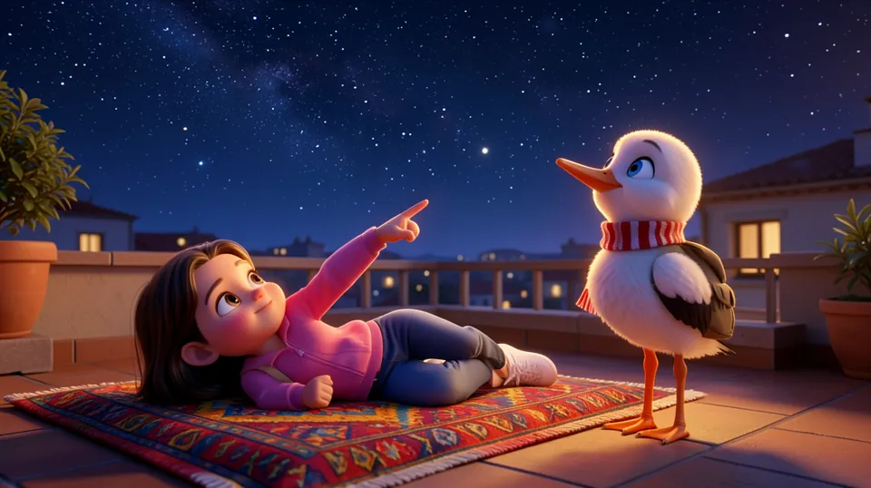
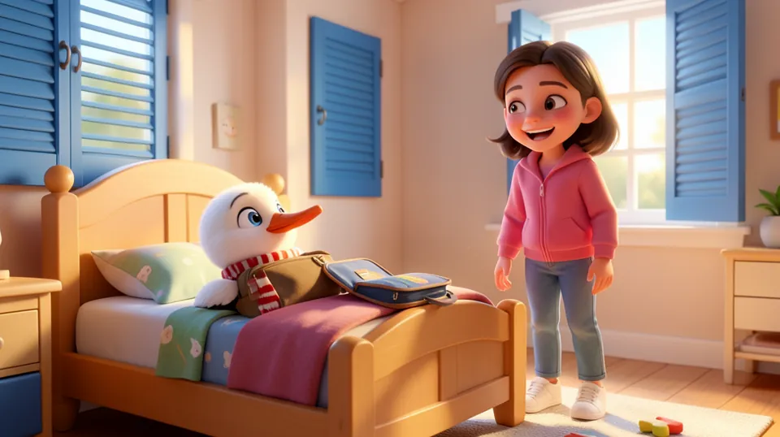
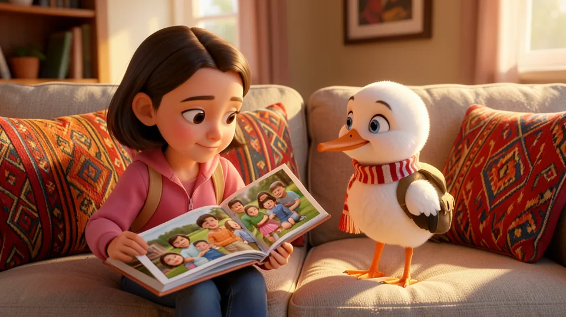
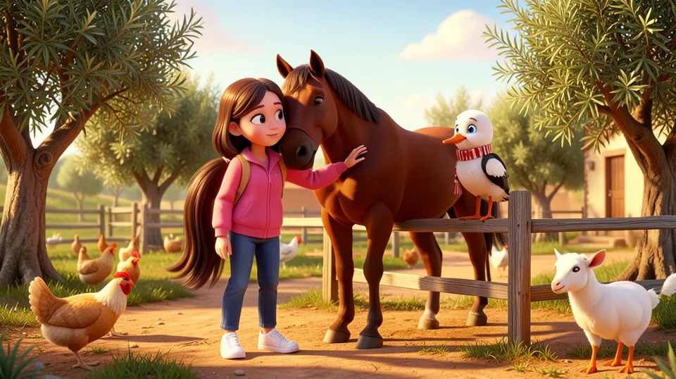
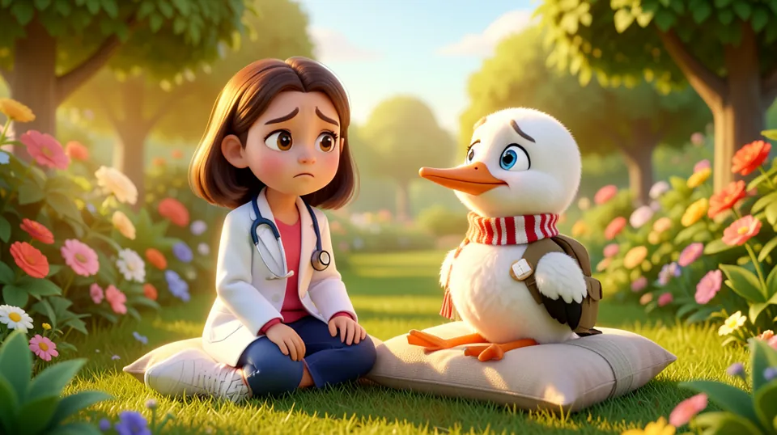
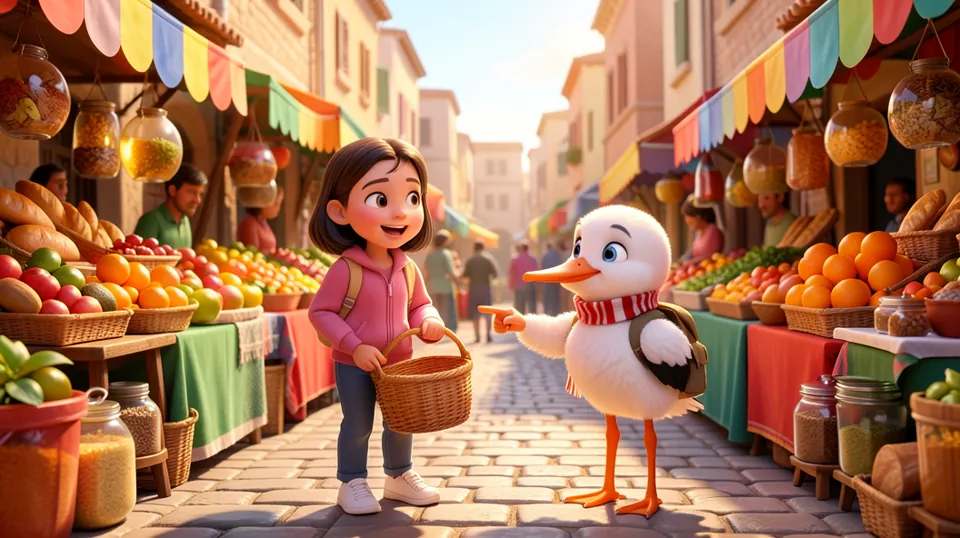
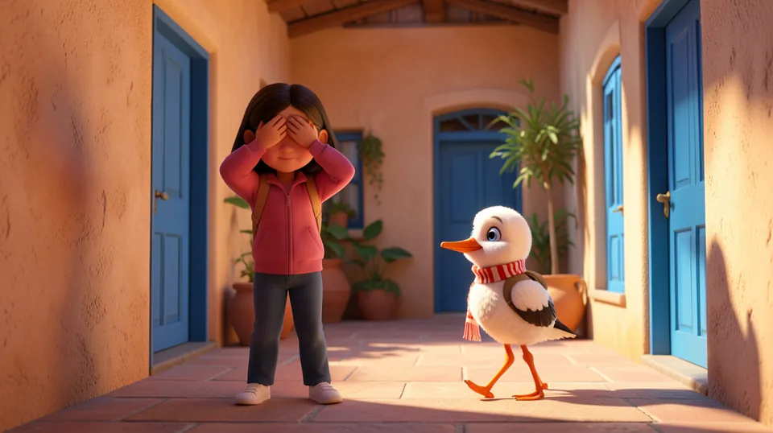

10 leçons pour commencer l'anglais avec Pip, le bébé cigogne venu d'Angleterre. Chaque leçon commence par un dessin animé dont tu es l'héroïne, puis tu écoutes, tu répètes, tu lis, tu écris et tu parles avec Pip. Niveau A1 ; les leçons 11 à 20 t'emmèneront au A2.

2🔢 Pip counts the starsLes nombres de 1 à 20, l'âge, le pluriel en -s
3🎒 In my school bagLes affaires d'école, les couleurs, a / an
4👨👩👧👦 This is my familyLa famille, my / your / his / her, he / she
5🐴 Animals of TunisiaLes animaux, I like / I don't like
6🩹 Doctor SalmaLe corps, have got / has got
7🍊 Yummy!La nourriture, I'm hungry, Do you like…?
8🏠 Where is Pip?La maison, in / on / under, there is / there are 9☀️ Sunny TunisiaLa météo, les vêtements, I'm wearing… 10🕊️ Pip can fly!Les actions, can / can't